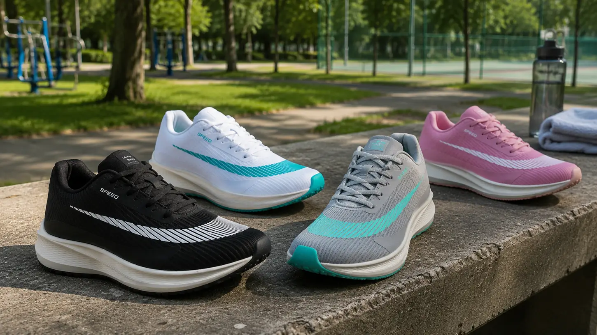
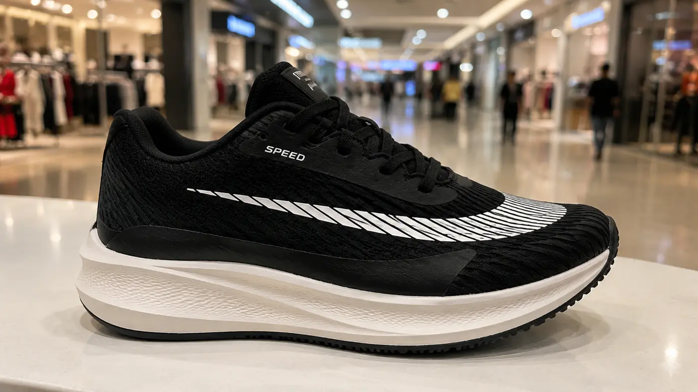

Nos últimos anos, tênis "de marca" viraram um gasto alto — muitas vezes mais de R$300 ou R$400 por um par. Boa parte desse valor não está em mais conforto, e sim em marketing e patrocínio.
Enquanto isso, quem só queria um tênis para caminhar, treinar ou sair de casa com um visual esportivo foi atrás de outro caminho.
Cresceu a busca por um modelo que entregasse conforto, leveza e visual esportivo — sem o preço de uma grife e sem parecer um calçado descartável.
Na prática, é isso que resume boa parte dessa busca: um tênis que sirva pra caminhar, ir à academia e sair de casa — sem parecer descartável nem custar como uma grife.
Foi nesse cenário que o Tênis Speed Unissex começou a chamar atenção — solado macio, cabedal leve e um visual esportivo que acompanha tanto um treino quanto uma caminhada no fim de tarde.
Indicado para treino leve, academia, caminhada e uso casual, o modelo aposta em cabedal leve e entressola macia — uma construção simples, sem muito exagero, pensada pra aguentar o uso do dia a dia. Os pontos mais citados por quem já pesquisou o modelo:
Além do preto e do branco/turquesa, o mesmo modelo também aparece em outras duas combinações: cinza com detalhes turquesa e rosa. A construção continua a mesma — muda apenas a combinação de cores.

Preto, branco/turquesa, cinza/turquesa e rosa — quatro opções de cor para o mesmo modelo.
Um dos motivos que mais aparece entre quem já procurou o modelo é justamente não precisar ter um tênis para cada ocasião. Para quem passa o dia em movimento — seja trabalhando em pé, levando os filhos para a escola ou treinando depois do expediente — ter um tênis confortável para todas essas situações já resolve grande parte do problema.
Quem já pesquisou o modelo tem aproveitado justamente essa variedade de cores — muita gente opta por levar duas combinações diferentes no mesmo pedido. A condição disponível atualmente permite escolher dois pares entre as quatro cores apresentadas, em vez de limitar a compra a uma combinação fixa.

Avaliações de clientes
Avaliações reais de quem já comprou o modelo SPEED.
Já faz algumas semanas que estou usando o Tênis Speed. Gostei do conforto nos treinos. Mesmo usando por mais tempo, achei que os pés ficam bem tranquilos.
Tenho usado nos treinos de musculação e também nas caminhadas. Até agora a experiência tem sido boa. Gostei principalmente do apoio durante os exercícios.
Escolhi duas cores diferentes e gostei das duas. Achei confortável e gostei bastante do visual também.
Alguém comprou recentemente? Estou pensando em pegar um para dar de presente para o meu namorado.
Eu comprei um para o meu marido e chegou direitinho. Ele gostou bastante do tênis.
Vi alguns comentários e estou pensando em comprar um também. Provavelmente vou pegar mais para o final do mês.
Semana que vem é aniversário do meu esposo e acabei comprando dois pares para dar de presente. Espero que ele goste.
Alguém sabe se a entrega costuma chegar certinho?
Chega sim, Clara. Comprei há alguns dias e o meu chegou direitinho, em 4 dias.
No começo fiquei meio desconfiado, mas o meu chegou normalmente há alguns dias.
Acabei escolhendo dois pares agora. Agora é só esperar chegar.
Bom dia, como faço para comprar?
Edson, também queria saber mais sobre esses tênis.